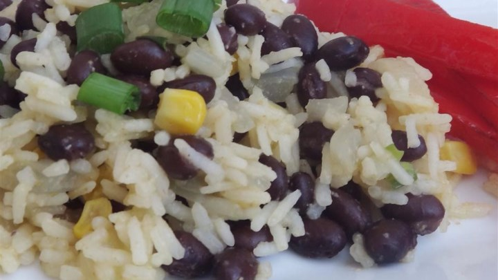

3 tablespoons cold unsalted butter, cut in 1/4-inch slices
2 tablespoons fresh Italian parsley, chopped
Instructions:
Place chicken breasts between 2 layers of plastic wrap and pound to about 1/2-inch thick.
Season both sides of chicken breasts with cayenne, salt, and black pepper; dredge lightly in flour and shake off any excess.
Heat olive oil in a skillet over medium-high heat. Place chicken in the pan, reduce heat to medium, and cook until browned and cooked through, about 5 minutes per side; remove to a plate.
Cook capers in reserved oil, smashing them lightly to release brine, until warmed though, about 30 seconds.
Pour white wine into skillet. Scrape any browned bits from the bottom of the pan with a wooden spoon. Cook until reduced by half, about 2 minutes.
Stir lemon juice, water, and butter into the reduced wine mixture; cook and stir continuously to form a thick sauce, about 2 minutes. Reduce heat to low and stir parsley through the sauce.
Return chicken breasts to the pan cook until heated through, 1 to 2 minutes. Serve with sauce spooned over the top.
Black Beans and Rice

Ingredients:
1 teaspoon olive oil
1 onion, chopped
2 cloves garlic, minced
3/4 cup uncooked white rice
1 1/2 cups low sodium, low fat vegetable broth
1 teaspoon ground cumin
1/4 teaspoon cayenne pepper
3 1/2 cups canned black beans, drained
Instructions:
In a stockpot over medium-high heat, heat the oil. Add the onion and garlic and saute for 4 minutes. Add the rice and saute for 2 minutes.
Add the vegetable broth, bring to a boil, cover and lower the heat and cook for 20 minutes. Add the spices and black beans.